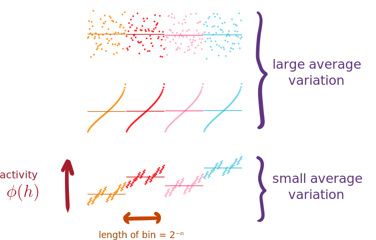

4 Locality and numerical convergence
The previous chapter gave a detailed description of the mappings \(S : [0,1]^2 \mapsto [0,1]\), as well as a few numerical considerations. We found that mappings that yield equivalent dynamics crucially seem to have in common the property of locality (from 1D to 2D), even if the image seems to have a fractal structure. Intuitively, we saw that the locality seems to emerge from the mapping having for the most part small discontinuities.
In this chapter, we will further explore these results, and attempt to formulate a measure of this “locality”. As a preamble, we show that bijectivity and measurability are sufficient conditions for the 2D and 1D neural field dynamics to be equivalent. Then, we apply our measure of “locality” to the special cases of the Column and Z-mappings, and show how this notion can discriminate between the two mappings. Finally, we show that our measure of locality is sufficient to ensure that the numerical estimation of the integral converges to the analytical integral; therefore, such embeddings can be simulated numerically.
4.1 Analytical equivalence of the dynamics when \(S\) is measurable and bijective
Let us assume that the mapping \(S\) is bijective and measurable. This is not a strong assumption, since the limit of pointwise convergent measurable functions is also measurable. In our case, we have written the finite-\(n\) expansions \(S^n\), which, by being sums of piecewise constant functions, are also measurable. The measurability of \(S\) allows us to write \(\lambda \circ S^{-1}\), the pushforward measure (or image measure) of \(\lambda\) under the mapping \(S\).
With these two assumptions, let us prove that by defining the initial condition and connectivity \[ \begin{aligned} \tilde h(\alpha, t=0) &= h_U(S^{-1}(\alpha), t=0)\\ \tilde w(\alpha, \beta) &= w_U(S^{-1}(\alpha), S^{-1}(\beta)), \end{aligned} \]
then the solution \(h_U(\boldsymbol{v}, t)\) of the neural field equation in \([0,1]^2\) uniquely defines the solution of the neural field equation in \([0,1]\) by writing
\[ \tilde h(\alpha, t) = h_U(\cdot, t) \circ S^{-1}(\alpha). \tag{4.1}\]
We start by recalling the expression of the one-dimensional neural field, then substitute Equation 4.1 and \(\boldsymbol{v} = S^{-1}(\alpha),\, \boldsymbol{u} = S^{-1}(\beta)\).
\[ \begin{aligned} \partial_t \tilde h(\alpha, t) &= -\tilde h(\alpha, t) + \int_{[0,1]} \tilde w(\alpha, \beta) \phi(\tilde h(\beta, t)) \left[\lambda \circ S^{-1}\right](\mathrm d\beta) \\ \iff&\\ \partial_t h_U(S^{-1}(\alpha), t) &= \begin{aligned}[t] &-h_U(S^{-1}(\alpha), t)\\&+ \int_{[0,1]} w(S^{-1}(\alpha), S^{-1}(\beta)) \phi(h_U(S^{-1}(\beta), t)) \left[\lambda \circ S^{-1}\right](\mathrm d\beta) \end{aligned}\\ &= \begin{aligned}[t] &-h_U(\boldsymbol{v}, t)\\&+ \int_{[0,1]} w(\boldsymbol{v}, S^{-1}(\beta)) \phi(h_U(S^{-1}(\beta), t)) \left[\lambda \circ S^{-1}\right](\mathrm d\beta) \end{aligned}\\ &= -h_U(\boldsymbol{v}, t) + \int_{[0,1]^2} w(\boldsymbol{v}, \boldsymbol{u}) \phi(h_U(\boldsymbol{u}, t)) \lambda(\mathrm d\boldsymbol{u}) \end{aligned} \]
In the last line, we used a basic property of the pushfoward measure (see [1], Theorem 3.6.1, p. 190). The Lebesgue measure \(\lambda : [0,1]^2 \mapsto \mathbb R^+\) simply plays the role of a uniform distribution on \([0,1]^2\), and we simply write
\[ \partial_t h_U(\boldsymbol{v}, t) = -h_U(\boldsymbol{v}, t) + \int_{[0,1]^2} w(\boldsymbol{v}, \boldsymbol{u}) \phi(h_U(\boldsymbol{u}, t)) \mathrm d\boldsymbol{u}. \]
Therefore, if \(h_U(\boldsymbol{v}, t)\) solves the neural field equation in \([0,1]^2\), then \(\tilde h(t) = h_U(t) \circ S^{-1}\) solves the equivalent neural field equation in \([0,1]\). The same reasoning applies in reverse: if \(\tilde h(\alpha, t)\) solves the neural field equation in \([0,1]\), then \(h_U(t) = \tilde h \circ S\) solves the neural field in \([0,1]^2\).
We do not address the question of well-posedness of the neural field equations in this thesis; for proofs of the well-posedness of neural field equations, we refer the reader to [2]–[4].
4.2 Locality
4.2.1 Locality as vanishing average binned variation
The previous chapter gave the intuition that local mappings map populations close in 1D to populations close in 2D. To verify this, we might try to compare the distance between all segment populations and the population at \(\alpha=0\), to the distance of all square populations to the population at \(S^{-1}(\alpha=0)\). This is done in Figure 4.1, where the 2D distance is taken to be the \(\ell^2\) norm. If the distances matched perfectly, then we would see a line with slope \(\sqrt 2\) in the graph.
For control, we also demonstrate that the random mapping has no locality: there is no correlation between the positions in 1D and the positions in 2D. Both Column and Z-mappings show a clear trend, the distances in 2D are correlated to the distances in 1D. The notable difference is that distances for the Column mapping seem to “oscillate” wildly, while the Z-mapping seems much more regular and matches the straight line more closely.
With this view, we understand that the coarse-grained performed in Section 3.4 was making use of that fact that locality helps by bounding the variation inside of each averaged bin. Therefore, we would like for mathematically formulate that on average, the variation inside of each bin before coarse-graining is small. Figure 4.2 gives an intuition of this. Even though the \([0,1]\) embedding might be discontinuous in places, on average nearby neurons should exhibit the same activity levels.

Given \(n\), let us define the average binned variation as the maximum difference of the 2D positions associated to segment populations in the same bin of size \(2^{-n}\):
\[ V_n(S^{-1}) = \frac{1}{2^n}\sum_{i=1}^{2^n} \sup_{\alpha, \alpha^\prime \in \left[\tfrac{i-1}{2^n}, \tfrac{i}{2^n}\right]^2} \lVert{S^{-1}(\alpha^\prime) - S^{-1}(\alpha)}\rVert_1 \tag{4.2}\]
The definition of locality can essentially be seen as a weakened version of continuity, or “continuity on average”. A continuous function \(f\) evidently verifies \(V_n(f) \xrightarrow{n \to \infty} 0\), since small neighbourhoods are mapped to small neighbourhoods. The reverse is obviously not true, since for instance the metric \(V_n\) vanishes when applied to a step function, which is only piecewise continuous.
Before we move to analytical derivations applying the average variation to mappings, we can first check numerically if it gives the expected results; that is \(V_n\) vanishes a \(n\to\infty\) for local mappings, whereas \(V_n\) is lower bounded by a constant for non-local mappings. Figure 4.3 shows this is indeed the case, rejoice!
4.2.2 Computations of average variation
To compute (a bound on) \(V_n\) for some mappings, we consider the binary expansion of \(\alpha\) and \(\alpha^\prime\) which appear in the supremum. For clarity and to represent actual numerical implementations, we furthermore truncate the binary expansion to \(2m\) bits (on most machines, \(2m=64\) bits).
\[ \begin{aligned} \alpha &= 0. b_1 b_2 \cdots b_{2m-1} b_{2m}\\ \alpha^\prime &= 0. b_1^\prime b_2^\prime \cdots b_{2m-1}^\prime b_{2m}^\prime \\ \end{aligned} \]
Furthermore, since \(\alpha \in \left[\frac{i-1}{2^n}, \frac{i}{2^n} \right],\, i \in \{1, \cdots, 2^n\}\), we may express the first \(n\) (where \(n < 2m\)) bits of \(\alpha\) with the bits of \(i=\sum_{k=0}^{n-1} i_k 2^k\) (we ignore \(i=2^n\) for the sake of simplicity, which would introduce one more bit, \(n+1\) in total).
\[ \begin{aligned} \alpha &= 0. i_{n-1} i_{n-2} \cdots i_1 i_0 b_n b_{n+1} \cdots b_{2m-1} b_{2m}\\ \alpha^\prime &= 0. i_{n-1} i_{n-2} \cdots i_1 i_0 b^\prime_n b^\prime_{n+1} \cdots b^\prime_{2m-1} b^\prime_{2m} \end{aligned} \]
4.2.2.1 Z-mapping
Let us consider the Z-mapping, and the two terms compositing its inverse. In the case of \(\alpha, \alpha^\prime\) above, we have if \(n\) is even:
\[ \begin{aligned} Z^{-1}_1(\alpha) &= 0.\underbrace{i_{n-1} i_{n-3} \cdots i_1}_\text{$n/2$ bits} b_n b_{n+2} \cdots b_{2m-1} \\ Z^{-1}_2(\alpha) &= 0.\underbrace{i_{n-2} i_{n-4} \cdots i_0}_\text{$n/2$ bits} b_{n+1} b_{n+3} \cdots b_{2m} \end{aligned} \]
If \(n\) is odd, we have :
\[ \begin{aligned} Z^{-1}_1(\alpha) &= 0.\underbrace{i_{n-1} i_{n-3} \cdots i_0}_\text{$(n+1)/2$ bits} b_n b_{n+2} \cdots b_{2m-1} \\ Z^{-1}_2(\alpha) &= 0.\underbrace{i_{n-2} i_{n-4} \cdots i_1}_\text{$(n-1)/2$ bits} b_{n+1} b_{n+3} \cdots b_{2m} \end{aligned} \]
We only consider even \(n\) in the following, as the proof remains very similar.
The core of the proof relies on the fact the first \(n/2\) bits of the difference of the inverses cancel out when computing the average binned variation.
\[ \begin{aligned} |Z^{-1}_1(\alpha) - Z^{-1}_1(\alpha^\prime)| &= \left|0.0 \cdots 0 (b_n b_{n+2} \cdots b_{2m-1} - b^\prime_n b^\prime_{n+2} \cdots b^\prime_{2m-1})\right| \\ &= \left|2^{-n/2} \sum_{k=1}^{\tfrac{2m-n+1}{2}} (b_{n+2k-1} - b^\prime_{n+2k-1}) 2^{-k}\right| \\ &\leq 2^{-n/2} \\ |Z^{-1}_2(\alpha) - Z^{-1}_2(\alpha^\prime)| &= \left|2^{-n/2} \sum_{k=1}^{\tfrac{2m-n+1}{2}} (b_{n+2k} - b^\prime_{n+2k}) 2^{-k}\right| \\ &\leq 2^{-n/2} \end{aligned} \]
Putting everything together, we get a vanishing upper bound for the average binned variation.
\[ V_n(Z^{-1}) \leq \frac{1}{2^n} \sum_{i=1}^{2^n} 2^{-n/2} + 2^{-n/2} = 2^{-n/2+1} \xrightarrow{n \to \infty} 0 \]
4.2.2.2 Column mapping
We now consider the Column mapping. Since here we consider finite-precision \(\alpha\) and \(\alpha^\prime\), the invere is well-defined and we have
\[ \begin{aligned} C^{-1}_1(\alpha) &= 0.i_{n-1} i_{n-2} \cdots i_1 i_0 b_n b_{n+1} \cdots b_m \\ C^{-1}_2(\alpha) &= 0.b_{m+1} b_{m+2} \cdots b_{2m}. \end{aligned} \]
The first component can be bounded using the same trick from the previous proof :
\[ \begin{aligned} |C^{-1}_1(\alpha) - C^{-1}_1(\alpha^\prime)| &= \left| 2^{-n} \sum_{k=1}^{m-n+1} (b_{n+k-1} - b^\prime_{n+k-1}) 2^{-k} \right| \\ &\leq 2^{-n}. \end{aligned} \]
However, now problems arise when we compute the averge binned variation, since the second component is not well-behaved. In particular, since we take the supremum on \(\alpha,\alpha^\prime \in \left[\tfrac{i-1}{2^n},\tfrac{i}{2^n}\right]^2\), we can pick the specific values such that \(b_k=1\) and \(b^\prime_k=0\) for all \(k \in \{m+1, \cdots 2m\}\).
\[ \begin{aligned} |C^{-1}_2(\alpha) - C^{-1}_2(\alpha^\prime)| &= \left| \sum_{k=m+1}^{2m} (b_k - b^\prime_k) 2^{-(k-m)} \right| \\ &= \sum_{k=m+1}^{2m} 2^{-(k-m)} \\ &> \frac 12 \end{aligned} \]
Putting both together, we can write :
\[ \begin{aligned} V_n(C^{-1}) &= \frac{1}{2^n}\sum_{i=1}^{2^n} \sup_{\alpha, \alpha^\prime \in \left[\tfrac{i-1}{2^n}, \tfrac{i}{2^n}\right]^2} |C^{-1}_1(\alpha^\prime) - C_1^{-1}(\alpha)| + |C^{-1}_2(\alpha^\prime) - C_2^{-1}(\alpha)| \\ &\geq \begin{aligned}[t] \frac{1}{2^n}\sum_{i=1}^{2^n}& \sup_{\alpha, \alpha^\prime \in \left[\tfrac{i-1}{2^n}, \tfrac{i}{2^n}\right]^2} |C^{-1}_1(\alpha^\prime) - C_1^{-1}(\alpha)|\\ &+ \sup_{\alpha, \alpha^\prime \in \left[\tfrac{i-1}{2^n}, \tfrac{i}{2^n}\right]^2} |C^{-1}_2(\alpha^\prime) - C_2^{-1}(\alpha)| \end{aligned}\\ &\geq \frac 12 + \mathcal{O}(2^{-n}) \end{aligned} \]
Therefore we have found a lower bound, which proves the average binned variation does not converge to zero (if it converges at all).
\[ V_n(C^{-1}) > \frac 12 \implies \lim_{n \to \infty} V_n > \frac 12 \]
4.3 Numerical convergence of the finite-\(n\) estimations
In Section 4.2.1, we have introduced the average variation metric \(V_n\). Assuming that \(V_n \xrightarrow{n\to\infty} 0\) (which expresses the locality property), does this imply that the numerical estimation of the integral in the neural field equation in \([0,1]\) converges to its true value?
The intuition behind the proof of convergence is that the variation, coming from the coarse-graining, inside each numerical bin vanishes as we increase the number of iterations \(n\), even though the the neural field \(\tilde{h}\) and the connectivity kernel \(\tilde{w}\) become fractal.
We define the one-dimensional field on the grid:
\[ \tilde h_i(t) = \tilde h(\tfrac{i-1}{2^n}, t) = \tilde h(\beta_i, t),\,\beta_i=\tfrac{i-1}{2^n},\,i\in\{1,\cdots,2^n\}. \]
Let us first recall the numerical and analytical integral. For any \(\alpha \in [0,1]\), let us define: \[ \begin{aligned} \mathrm{NI}_n &= \frac{1}{2^n} \sum_{i=1}^{2^n} \tilde w(\alpha, \beta_i) \phi(\tilde h_i(t)) \\ \mathrm{AI} &= \int_{[0,1]} \tilde w(\alpha, \beta) \phi(\tilde h(\beta, t)) \left[\lambda \circ S^{-1}\right](\mathrm d\beta). \end{aligned} \]
We wish to prove that \(|\mathrm{NI}_n - \mathrm{AI}| \xrightarrow{n \to \infty} 0\).
The first part of the proof involves splitting the integral on \([0,1]\) into \(2^n\) integral over segments of length \(2^{-n}\), and using the triangle inequality.
\[ \begin{aligned} |\mathrm{NI}_n - \mathrm{AI}| &= \left| \frac{1}{2^n} \sum_{i=1}^{2^n} \tilde w(\alpha, \beta_i) \phi(\tilde h_i(t)) - \int_{0}^{1} \tilde w(\alpha, \beta) \phi(\tilde h(\beta, t)) \left[\lambda \circ S^{-1}\right](\mathrm d\beta) \right| \\ &= \left| \frac{1}{2^n} \sum_{i=1}^{2^n} \tilde w(\alpha, \beta_i) \phi(\tilde h_i(t)) - \sum_{i=1}^{2^n} \int_{\tfrac{i-1}{2^n}}^{\tfrac{i}{2^n}} \tilde w(\alpha, \beta) \phi(\tilde h(\beta, t)) \left[\lambda \circ S^{-1}\right](\mathrm d\beta) \right| \\ &= \left| \sum_{i=1}^{2^n} \frac{1}{2^n} \tilde w(\alpha, \beta_i) \phi(\tilde h_i(t)) - \int_{\tfrac{i-1}{2^n}}^{\tfrac{i}{2^n}} \tilde w(\alpha, \beta) \phi(\tilde h(\beta, t)) \left[\lambda \circ S^{-1}\right](\mathrm d\beta) \right| \\ &\leq \sum_{i=1}^{2^n} \left| \frac{1}{2^n} \tilde w(\alpha, \beta_i) \phi(\tilde h_i(t)) - \int_{\tfrac{i-1}{2^n}}^{\tfrac{i}{2^n}} \tilde w(\alpha, \beta) \phi(\tilde h(\beta, t)) \left[\lambda \circ S^{-1}\right](\mathrm d\beta) \right| \\ \end{aligned} \]
We now want to prove that evaluating the integrand at \(\beta_i = \tfrac{i-1}{2^n}\) gives a good approximation of the integral. Let us assume that \(S\) is the Z-mapping. Then, \(S\) is measure-preserving (if \(\lambda\) is the Lebesgue measure on \([0,1]^2\), then \(\lambda \circ S^{-1}\) is the Lebesgue measure on \([0,1]\)). This implies that we have \(\int_{\tfrac{i-1}{2^n}}^{\tfrac{i}{2^n}} \left[\lambda \circ S^{-1}\right](\mathrm d\beta) = \tfrac{1}{2^n}\), and we write
\[ \begin{aligned} |\mathrm{NI}_n - \mathrm{AI}| &\leq \sum_{i=1}^{2^n} \left| \int_{\tfrac{i-1}{2^n}}^{\tfrac{i}{2^n}} \Delta(\beta) \left[\lambda \circ S^{-1}\right](\mathrm d\beta) \right| \\ \text{where}\ \Delta(\beta) &= \tilde w(\alpha, \beta_i) \phi(\tilde h_i(t)) - \tilde w(\alpha, \beta) \phi(\tilde h(\beta, t))\\ &= w_U(\alpha, S^{-1}(\beta_i)) \phi(h_U(S^{-1}(\beta_i), t)) - w_U(\alpha, S^{-1}(\beta)) \phi(h_U(S^{-1}(\beta), t)) \end{aligned} \]
The main source of variance inside the integrand \(\Delta(\beta)\) is the term \(S^{-1}\), since \(w_U\) and \(h_U\) are “nice” functions. We express this regularity by the added assumption that \(w_U(\alpha, \boldsymbol{u}) \phi(h_U(t, \boldsymbol{u}))\) is Lipschitz in \(\boldsymbol{u}\), with Lipschitz constant \(L(\alpha)\), and \(\lVert{\alpha}\rVert\) the corresponding norm on \([0,1]^2\). We argue this is not a strong assumption, because this is just expressing the regularity of the integrand in the integral over \([0,1]^2\).
A more pragmatic justification of this is to notice that the recurrent currents are expressed as:
\[ I^\text{rec}_U(\boldsymbol{v}) = w_U(\boldsymbol{v}, \boldsymbol{u}) \phi(h_U(t, \boldsymbol{u})), \]
and that in Section 2.4, numerical simulations showed that \(I^\text{rec}_U(\boldsymbol{v})\) is a well-behaved function.
Applying the Lipschitz assumption yields the following inequality on the integrand:
\[ \begin{aligned} \Delta(\beta) &= w_U(\alpha, S^{-1}(\beta_i)) \phi(h_U(S^{-1}(\beta_i), t)) - w_U(\alpha, S^{-1}(\beta)) \phi(h_U(S^{-1}(\beta), t)) \\ &\leq L(\alpha) \lVert{S^{-1}(\beta_i) - S^{-1}(\beta)}\rVert \end{aligned} \]
We now make use of our intuition of “locality”: points close in \([0,1]\) should be (on average) mapped to points close in \([0,1]^2\). Therefore, taking the sup inside each \(2^{-n}\) segment does not introduce a too large error.
\[ \begin{aligned} |\mathrm{NI}_n - \mathrm{AI}| &\leq L(\alpha) \sum_{i=1}^{2^n} \left| \int_{\tfrac{i-1}{2^n}}^{\tfrac{i}{2^n}} \lVert{S^{-1}(\beta_i) - S^{-1}(\beta)}\rVert \left[\lambda \circ S^{-1}\right](\mathrm d\beta) \right| \\ &\leq L(\alpha) \sum_{i=1}^{2^n} \left| \int_{\tfrac{i-1}{2^n}}^{\tfrac{i}{2^n}} \sup_{\beta \in \left[\tfrac{i-1}{2^n}, \tfrac{i}{2^n}\right]} \lVert{S^{-1}(\beta_i) - S^{-1}(\beta)}\rVert \left[\lambda \circ S^{-1}\right](\mathrm d\beta^\prime) \right| \\ &= L(\alpha) \frac{1}{2^n} \sum_{i=1}^{2^n} \sup_{\beta \in \left[\tfrac{i-1}{2^n}, \tfrac{i}{2^n}\right]} \lVert{S^{-1}(\beta_i) - S^{-1}(\beta)}\rVert \\ &\leq L(\alpha) \frac{1}{2^n} \sum_{i=1}^{2^n} \sup_{\beta, \beta^\prime \in \left[\tfrac{i-1}{2^n}, \tfrac{i}{2^n}\right]^2} \lVert{S^{-1}(\beta^\prime) - S^{-1}(\beta)}\rVert \\ &= L(\alpha) V_n \\ &\xrightarrow{n \to \infty} 0 \end{aligned} \]
We see that it is the notion of “locality” of the mapping \(S\) that allowed us to write the convergence of the numerical integral to the analytical value. In doing so, we exploited the fact that the “variance” inside each small segment in \([0,1]\) is small on average, and that the errors vanish as we take finer and finer bins.
4.4 Generalizing to \([0,1]^p \mapsto [0,1]\)
We finish this thesis by tying up the loose ends. In the abstract, we wrote that any \(p\)-dimensional neural field equation is equivalent to a neural field equation in \([0,1]\), but we only gave demonstrations for \([0,1]^2\) to \([0,1]\). Section 3.5.3 showed that it is possible to iteratively apply the mapping \(Z : [0,1]^2 \mapsto [0,1]\) to reduce dimensionality of the neural field, but it might be more practical to have a direct mapping \(Z_p : [0,1]^p \mapsto [0,1]\).
Let us give a generalization of the Z-mapping. Defining \(\boldsymbol{v^{(n)}} = (v^{(n)}_1, \cdots, v^{(n)}_p)\), and the finite binary expansions \(v^{(n)}_\mu = \sum_{k=1}^{n} b^\mu_k 2^{-k}\), we can define \(Z^n_p\) as
\[ \begin{aligned} Z_p^n(\boldsymbol{v^{(n)}}) &= \sum_{k=1}^{n} \sum_{\mu=1}^p b^{\mu}_k 2^{-(p(k-1)+\mu)} \\ &= 0.b^1_1 b^2_1 \cdots b^p_1 b^1_2 b^2_2 \cdots b^p_{n-1} b^1_n b^2_n \cdots b^p_n \end{aligned} \]
The same arguments apply to show that this generalized Z-mapping converges pointwise to \(Z_p\), has the locality property, and that \(V_n(Z_p) \xrightarrow{n\to\infty} 0\). Then the proof of convergence, albeit more laborious, can be repeated using the same procedure.